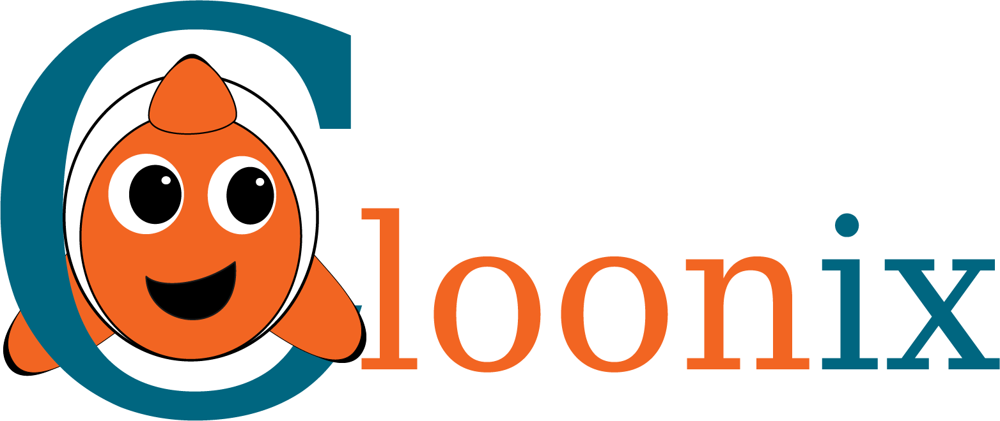

Cloonix builds, on one Linux host, a network of virtual machines, QEMU/KVM with their own kernel, and of containers, crun on the kernel of the host. It cables them through Open vSwitch bridges the way a lab is cabled with switches, so OSPF, DHCP or a wifi association run as on hardware. The network is drawn on a canvas in the browser or typed as command lines; then any node opens a root shell, and any cable a packet capture.
Get started Downloads Documentation
AGPLv3, version 101. A Linux host for cloonix, any browser for the canvas.
Two containers on one lan, as the canvas draws them and as a terminal
builds them, the net nemo started first by
cloonix start nemo in a terminal of its own. A machine is a circle, its
interfaces the dots on its border: green when it can be captured, cyan when
born without capture. For any
network on the canvas, Commands in the Demo panel prints the lines
that build it again.
cloonix cli nemo add cnt cnt1 eth=1 trixie
cloonix cli nemo add cnt cnt2 eth=1 trixie
cloonix cli nemo plug cnt1 eth0 lan1
cloonix cli nemo plug cnt2 eth0 lan1
cloonix cli nemo cnf cnt1 eth0 sniff=on
cloonix cli nemo cnf cnt1 note="1.1.1.1/24"
cloonix cli nemo cnf cnt2 note="1.1.1.2/24"
cloonix cli nemo dump commandsThe last line prints the commands of whatever the net holds, drawn or typed. The first run adds the addresses and the ping.
The graphical interface is a web page served by cloonix itself. There is nothing to install on the machine you browse from.
https://127.0.0.1:4444, user nemo, password
nemoclown: not secret, they are in
/usr/libexec/cloonix/cloonfs/etc/cloonix.cfg, where they can be
changed.
An item owns one or more ports. Each port carries one connection, drawn as a line to a crossroad called a lan, which is an Open vSwitch bridge. Every item of this list plugs into every other the same way.
Sixty FRR routers in a spider topology start in about a minute. Watch OSPF converge, cut a cable, watch it reconverge.
Double-click a green interface dot to capture it. The dissection engine is wireshark's, the viewer is a web page: no Qt, no X forwarding.
A topology is a python file of a few lines. Send it to somebody and they get the same network.
demos/ holds subject areas, and under each one python file per
demo: a running topology, every cloonix command printed as it is typed, and
the packet that shows the protocol at work.
cloonix | cloonix under itself | a2b c2c cnt cntkvmwifi cntwifi kvm kvmwifi limit mount nat nginx phy realnet snf systemd |
switching | one wire, several networks | ovn stp vlan vxlan |
routing | how a packet finds a way | babel batman bird frrmix frrspider frrspider_bgp isis |
address | an address, a name | dhcp dns ipv6 knot ntp unbound |
security | tunnels, filters, who is let in | arp ebpf ipsec nftables openvpn radius suricata tinc tls wg |
services | the machines in the middle | asterisk mqtt proxy smtp squid |
availability | staying up when one stops | cluster vrrp |
watching | what the path carries, and what it costs | perf |
wifi | the air, before the ip stack | cnt_open cnt_wpa2 cnt_wpa3 cnt_bridge cnt_roaming cnt_mesh, their kvm_ twins, cntkvm_home cntkvm_enterprise cntkvm_roaming cntkvm_monitor |
windows.py | a guest with no agent | the firewall rule everyone forgets |
freebsd.py | a guest that is not linux | the agent on a disc of its own |
cisco.py | a guest driven over its console | three ios-xe routers in ospf |
A tarball you extract as a normal user. Cloonix runs inside a container it brings with it. Nothing is written outside the directory, and deleting the directory removes it.
Everything on this page works in the toy, but six demos it
leaves out: limit, systemd, phy and realnet of cloonix, ebpf of
security, and cisco.py.
An installation under /usr/libexec/cloonix, done once as root.
Several users share it, each running their own networks.
The client cloonix goes in /usr/bin, the
demos in /usr/share/cloonix/demos.
Containers only, no kvm: the project merged into the root of the toy, its demos and the examples of its own documentation in the Demo panel.
cloonix-frr-toy.tar.xz | frr: the three routing demos and 26 examples of the FRR User Guide |
cloonix-bird-toy.tar.xz | BIRD: routing/bird.py and 13 examples of the BIRD User's Guide |
cloonix-suricata-toy.tar.xz | Suricata: security/suricata.py and 7 examples of the Suricata User Guide |
cloonix-bind-toy.tar.xz | BIND 9: address/dns.py and 12 examples of the BIND 9 Administrator Reference Manual |
cloonix-source-101.tar.gz:
cloonix, the demos, the image builders, the tests, the two books. It
compiles from
cloonix-targz_store-101.tar.gz,
the open sources it rebuilds, extracted at its root first.
/var/lib/cloonix/bulk| cnt_bulk | 8 container images: alpine, debian trixie, ubuntu, rocky, fedora, arch, tumbleweed, and trixie with systemd |
| kvm_bulk | 15 machine images: the same seven distributions, and eight desktops |
| cnt_demo_bulk | 29 container images, one per subject of the demos: frr, wireguard, dns, dhcp, mqtt, … |
| kvm_demo_bulk | the machine image of the demos that run the cloonix client in a guest |